Where is it cold? Where does it rain? What grows there? The climate plugin answers these three questions for every place of a map, starting only from its relief, so that the answers always agree with each other and with the land: no snow at the beach, no rainforest in a rain shadow.
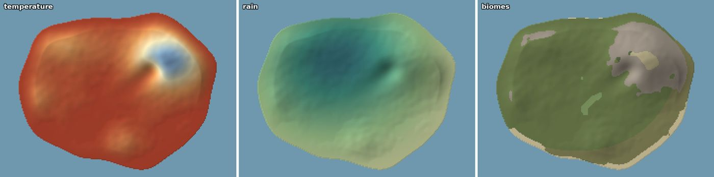
Colder on the mountain, wetter on the slope that faces the wind, and the biomes that follow.
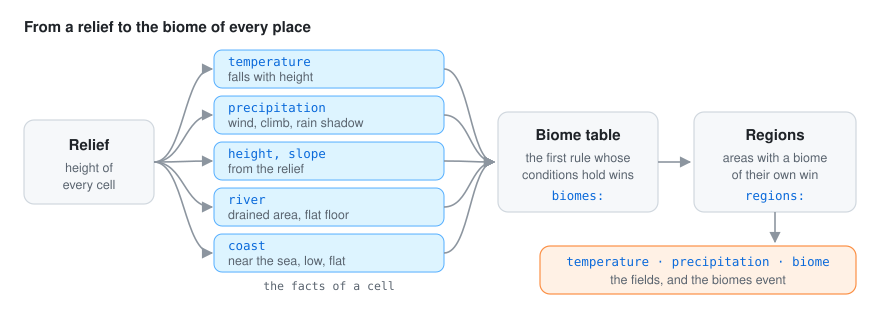
It works the climate out at the start and publishes three fields and an event:
| Output | Content |
|---|---|
field temperature |
mean yearly temperature, °C |
field precipitation |
yearly rain and snow, mm |
field biome |
index into the names of the biomes event, −1 for the sea |
event biomes |
{"names": […]}, the biome of every index |
The grid has the cell given by cell (km), over the relief’s extent; origin places the relief’s
kilometres east and north on the world (x = east − origin[0], z = origin[1] − north).
The relief is the relief file or, without one, the world’s elevation, as the
terrain plugin publishes it (put it first). On
the world’s ground the climate also takes the world’s drainage_area when there is one (see
below), and when that ground changes, because the terrain’s erosion rule moved it, the climate is
worked out again in the step after and published again.
The maps and charts below are of a made-up island, 20 km by 15 km, with a ridge of about 2,550 metres in the east, run with the rules file in getting started.
Air gets colder as you climb, by about 6.5 °C every kilometre. That is most of the story:
temperature = sea_level − lapse × height_km + northward × (north − middle of the map) / 10
sea_level is the mean at sea level (°C), lapse the degrees lost per kilometre of height (6.5 is
the standard atmosphere) and northward an optional gradient per 10 km (negative: colder to the
north). Sea cells take the sea-level value.
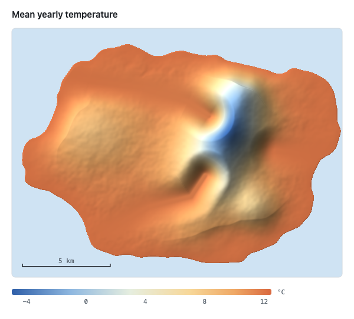
With sea_level: 12 and lapse: 6.5, the coast is at 12 °C and the top of the ridge, about 2.5 km
up, at about −4.5 °C.
Rain is the interesting part. Moist air blows in from one side; when it has to climb a mountain it
cools and drops its water on the slope facing the wind, and by the time it comes down the other
side it is dry: the rain shadow. The plugin follows that air across the map. A semi-Lagrangian
moisture model carries it from where the wind comes
(wind_from, degrees clockwise from north):
relief_scale, km), and the moisture is carried on a
coarser grid (calculation_cell, km), downwind, cell by cell: every cell takes the air of the
cell upwind.base), more where it climbs
(rise, extra share per metre up per metre forward): orographic rain on the windward slopes.recharge); over flat land, slowly
(evaporation). Behind a ridge, the air is drier: the rain shadow.background mm a year times the air’s humidity there (1 = saturated:
frontal rain) plus orographic mm times what the air dropped there, measured against the most
exposed 3 % of the land. Both are smoothed by smoothing km.Without rain settings the defaults are neutral, for every world to set its own: the wind from
the west, as the westerlies of the middle latitudes blow; 1,000 mm of background, about the
world’s mean (2.6 mm a day; Adler et al. 2003, the GPCP analysis); and 1,000 mm of orographic,
which doubles the rain on the most exposed windward slopes, a moderate case of what mountain
ranges show (Roe 2005).
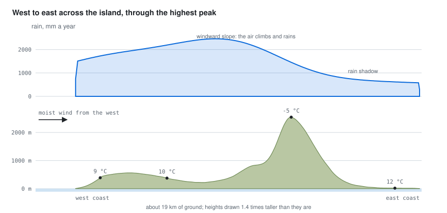
The same island with the wind turned round: everything else is the same, so the wet side and the rain shadow swap places.
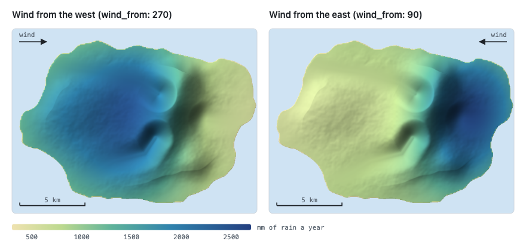
The area that drains through every land cell is followed downhill, from the highest cell to the
lowest: each cell sends its water to the lowest of its eight neighbours. When the world has a
drainage_area (the terrain’s erosion rule publishes it, with hollows filled so all water
reaches the sea), that one is used instead, so the climate’s rivers are the terrain’s: every cell
of the climate’s grid takes the largest area of the cells inside it, so a river one fine cell wide
is not lost on a coarser grid. A cell is on a river valley when it drains more than river_area km²
and is flatter than river_slope; the valley floor is widened by two cells. A cell is on the
coast when it is within coast_reach km of the sea, lower than coast_low metres and flatter
than coast_slope.
On the biome map below, riverside follows the island’s three valleys down to the sea,
and coast is the thin low rim where the land meets it.
With heat and rain known, choosing the biome is a matter of rules, like a field guide: “colder than −2.5 °C: snow; steeper than 0.6: rock; otherwise, if it rains more than 1000 mm: forest…”. Every land cell gets the first biome whose conditions hold, in the order written:
biomes:
- {biome: snow, when: {temperature: {max: -2.5}}}
- {biome: rock, when: {slope: {min: 0.6}}}
- {biome: riverside, when: {river: true}}
- {biome: coast, when: {coast: true}}
- {biome: forest, when: {temperature: {max: 11}, precipitation: {min: 1000}}}
- {biome: steppe} # no conditions: everything left
Conditions use go-simulator’s condition language
over the facts of a cell: temperature, precipitation (mm), height (m), slope (rise over
run), river_area (km² drained), and the yes/no facts river and coast. An unknown fact is an
error.
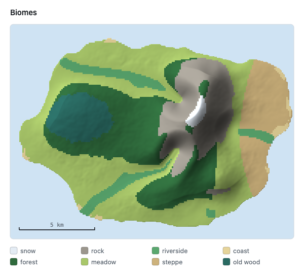
The island’s table is the one above with a meadow rule (precipitation: {min: 750}) before
steppe. Placing every place by its rain and temperature shows the table at work: each biome fills
the box its conditions leave it.
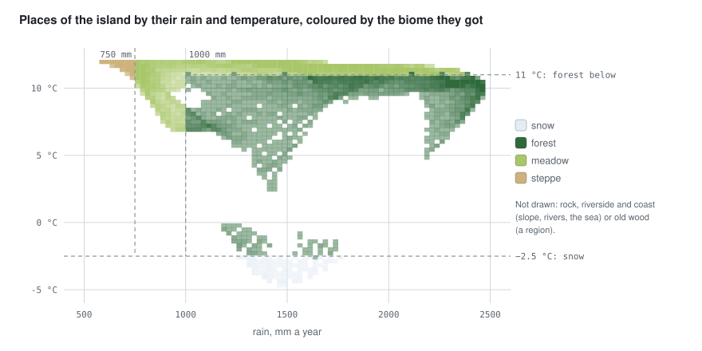
Regions give areas of the map a biome of their own, over the table: an ellipse (centre and
radii, km east and north) or a polygon, with their own conditions. ragged (a share of the
ellipse’s size) makes the edge irregular, like a real forest’s, with smooth value noise that is the
same for the same place.
regions:
- {biome: old wood, ellipse: {centre: [3, 6], radii: [2, 1.5]}, ragged: 0.15, when: {height: {min: 150}}}
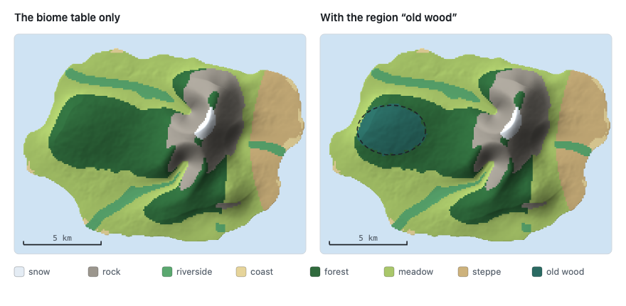
The yearly mean is not the whole story when you watch a scene: snow comes down in winter and
leaves turn in autumn. The seasons rule turns the year on any clock: the year lasts year_length units of the stage’s
time (months on a stepped clock, seconds on a real-time one), and warmest says when in the year
it is warmest (a share: 0.35 is a little past a third). The temperature swings amplitude °C
around the yearly mean, so the snow line, where the season’s temperature falls below snow_at,
climbs in summer and comes down in winter (with snow_blend metres of fade). Foliage takes the
colour of the season from foliage stops ({at, color, amount}), interpolated around the year.
It changes the environment (snow and foliage_tint); go-renderer draws snow on surfaces that
face up and tints materials marked as foliage.
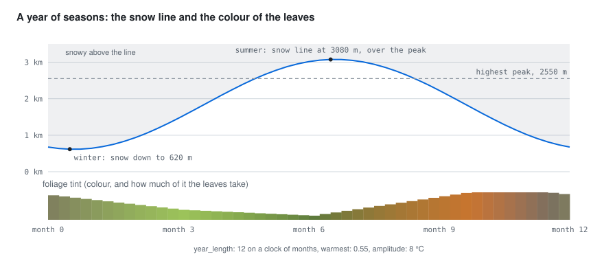
| Winter | Summer |
|---|---|
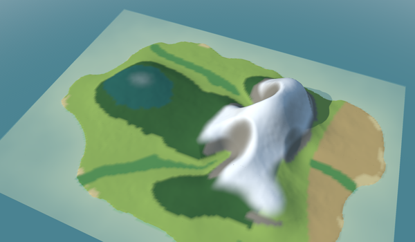 |
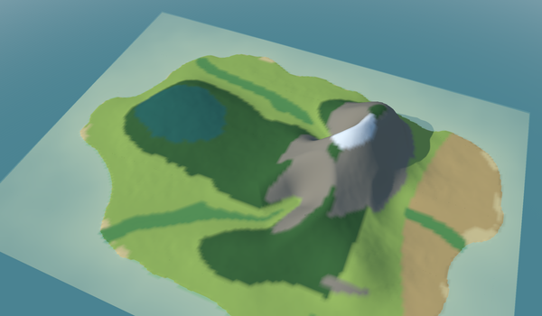 |
The snow biome and the season’s snow are two different things: the biome is where the yearly mean
is cold enough (a colour of the terrain, the same all year), the season’s snow is drawn on top of
everything above the snow line of the moment.
cd ../go-simulator && go run ./cmd/simulate -rules climate.yaml -output results
The flora plugin reads the fields from the world to grow vegetation.
For go-scene-builder, which colours the terrain and sows
each biome’s vegetation from a layer (-layer biome=biomes.json), give the rule a layer:
- rule: climate
with: {relief: relieve.json, origin: [3, 2], layer: biomes.json, …}
It saves biomes.json and biomes.f32 once, at the start, next to the rules file (or where the path
says). The grids go-simulator saves in its snapshots will not do for this: their coordinates are the
world’s x and z, which move with origin, and the names of the biomes are not in them (they travel in
the biomes event). The layer is in the relief’s own kilometres east and north, like the scene
builder’s map and relief, and carries the names as labels; the sea is −1, with no name. Getting started has a whole rules file
and the way to the viewer.